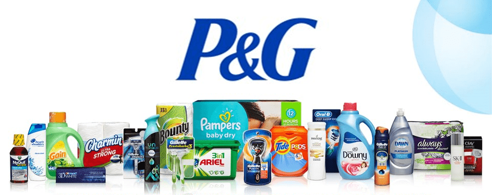

Sales Intern - project management and data-driven strategy for the P&G Grooming portfolio at Sam's Club.
RoleSales intern, project management
TimelineInternship · 4 months
TeamSales (with cross-functional partners)
ToolsPower BI, Spotfire, Nielsen
Overview

A snapshot of the P&G brand family I worked within during my Sam’s Club internship – from grooming and household brands to everyday essentials.
As a Sales Intern at Procter & Gamble in Fayetteville, Arkansas, I owned project management for a $150M business growth initiative for the P&G Grooming portfolio (Gillette, Venus, Braun) at Sam's Club. The role required synthesizing complex data from multiple sources, supporting cross-functional projects, and delivering executive-ready recommendations that blended user experience thinking, AI-enabled analytics, and B2B growth strategy.
My role
The grooming brands at the center of my work – Gillette, Venus, and Braun – where I focused on growth strategy for the Sam’s Club channel.
Project management - Managed timelines, dependencies, and executive deliverables for the $150M initiative.
Data synthesis - Used Nielsen, Spotfire, and Power BI to generate insights for high-visibility and cross-functional projects.
Performance & optimization - Applied A/B performance logic and KPI monitoring to support optimization strategies.
Executive delivery - Delivered product adoption, performance metrics, and roadmap recommendations to senior leadership.
End-to-end strategy - Led data-driven strategy work translating consumer, retailer, and performance insights into executive-ready recommendations across user experience, AI-enabled analytics, and B2B growth strategy.
What I can share
Because of Procter & Gamble’s confidentiality policies, I can’t show the specific dashboards, decks, or internal tools I worked on for this project. I’m happy to talk through what I can share – how I approached the work, what I learned about retail growth strategy, and how those skills show up in my current projects – in an interview or conversation.
If you’d like to go deeper, feel free to reach out through any of the contact links below – I’d love to talk.